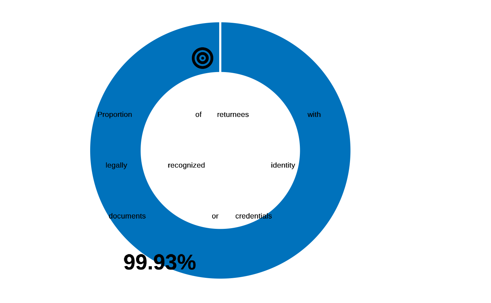

Proportion of returnees with legally recognized identity documents or credentials
Arguments
- datalist
A list with all hierarchical data frame for a survey data set. format is expected to match the Excel export synchronized from kobo to RILD and loaded with kobocruncher::kobo_data()
Details
This indicator measures the proportion of returned refugees who possess legally recognized and valid identity documents or credentials to support their return .
Commonly in the context of return, returnees require civil documentation or credentials and inclusion in or updating of civil registries , as well as access to services.
Definitions
• Identity document or credential is any document or credential which may be used as proof of identity, which may also include reference to the individuals' legal status and associated rights vis-à-vis the host State and/or UNHCR.
| Standard Questions |
| REG01 - REG02 - REG03 / REG05 - REG06 |
Numerator: Total number of returnees with with legally recognized identity documents or credentials
Denominator: Total number of returnees
Formula: REG01=1 \| REG02=1 \| REG03=1 \| REG05=1 \| REG06=1
This indicator comes from the individual dataset Calculate valid identity documents for under 5 with REG05 and REG06 variables
Examples
## data, cf example fct_re_map()
datalist <- kobocruncher::kobo_data( system.file("dummy_RMS_CAPI_v2_mapped.xlsx",
package = "IndicatorCalc"))
#> Warning: Unknown or uninitialised column: `_parent_index`.
## Apply indicator function on datalist
datalist <- outcome14_1(datalist )
#> ✔ REG01a
#> ✔ REG01b
#> ✔ REG01c
#> ✔ REG01d
#> ✔ REG01e
#> ✔ REG01f
#> ✔ REG01g
#> ✔ REG02
#> ✔ REG03
#> ✔ REG04
#> ✔ REG05a
#> ✔ REG05b
#> ✔ REG05c
#> ✔ REG05d
#> ✔ REG05e
#> ✔ REG05f
#> ✔ REG06
## Visualise value
fct_plot_indic_donut(indicator = datalist[["ind"]]$outcome14_1,
iconunicode = "f140")
